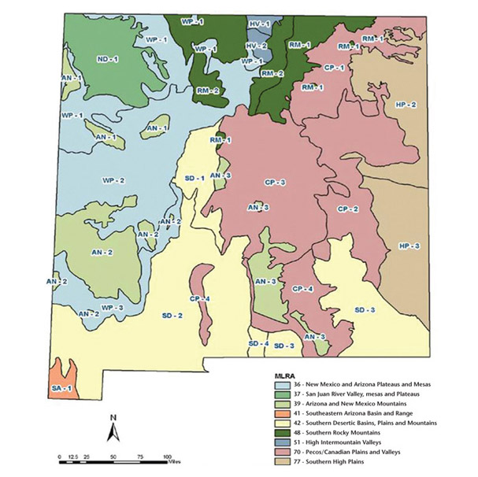

Common Plants of Santa Fe
A Guide to Native Plants of Santa Fe
Common Plants
Common Yarrow
Common Yarrow grows to 1-2 feet tall at maturity and are easy to spot with clusters of disc shaped flowers on top of feathery leaves and fragile stems. You may notice a particularly spicy scent from nearby Common Yarrow.

Saskatoon Berry
The Saskatoon Berry is a deciduous shrub that can reach up to 6-10 feet in height at maturity. This plant can be found on rocky or dry slopes as well as thickets that have drainage. The flowers arrive in early spring and berries arrive in late June.
Desert Marigold
This perennial offers flowers that are bright yellow in color and about 1-2 inches wide. The Desert Marigold can grow up to 10-30 inches tall and features hairs in the high desert region. Desert Marigolds will bloom from March through November.
Big Sagebrush
This robust plant features clusters of gray colored leaves that have a definite aromatic scent. The leaves contain 3 lobes and can grow as tall as 7 feet. You’ll find this plant growing in deep fertile soil in the northern desert regions of the Taos.
True Mountain Mahogany
This bushy shrub can reach anywhere between 2-10 feet high at maturity and features broad leaves that are up to 2 inches long. Livestock enjoy eating the leaves and fruit which offers important support of these animals especially during the winter.
Purple Threeawn
Purple Threeawn is a small bunchgrass to 1 ft tall, less than 1 foot wide. In summer, the seedheads form a cloud of purple. The seedhead that carries the seed is 3-spoked pinwheel. The seed can lodge in pet paws so this isn't the grass to use near them.
Range Plants
Rangeland Areas
Range Plant Utility
Ranching
New Mexico contains almost 78 million acres, more than 90 percent of which is in native vegetation grazed by domestic livestock and wildlife. The kinds of plants that grow on a range, along with their quality and quantity, determine its value. A successful rancher knows the plants on his or her range.
Species
There are more than 3,000 species of plants in New Mexico. The 85 discussed here are most important to the livestock industry. Most of these are native plants.
This map represents the major rangeland areas in New Mexico. The northern desert, western plateau, and high valley areas are enough alike to be described together, as are the central and high plains areas and the southern desert and basin.